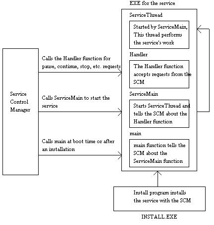

Win32 Programming
Features for Windows NT and Windows 95
by Marshall Brain
Services
Every operating
system needs a way to execute background tasks that run continuously
regardless of who is using the machine. These background tasks
can perform various services important to the system or its users.
For example, a messaging system might monitor the network and
display a dialog box whenever it receives a message from another
machine. An application that sends and receives faxes needs to
start up at boot time and then continuously monitor the fax modem
for fax machines dialing in. A home or office security program,
or code that controls a piece of test equipment, may need to poll
sensors periodically and respond to them when appropriate. All
of these tasks require CPU time to perform their jobs, but should
not affect a user working at the keyboard because they require
so little of the total CPU power available.
In MS-DOS, background tasks like these are handled by Terminate and Stay Resident (TSR) programs. These programs are started in the autoexec.bat file. In UNIX, background tasks are handled by Daemons. At the very end of a UNIX machine's boot process you can see the operating system start up things like the Cron and Finger daemons before the system lets the first user log in. In Windows NT, background tasks are called services. Services start automatically when NT boots and remain running in the background regardless of who is logged in.
Windows NT services are implemented as normal executables, but follow a very specific protocol internally that allows them to interact properly with the Service Control Manager (SCM). In this article, you will learn how to create and install simple Win32 services in Windows NT. Once you understand simple services, it is easy to build your own because all services, no matter how complicated, must contain the same basic SCM interface code. Once the requirements of the SCM are met however, there is no real difference between the executable for a service and a regular program.
A good working knowledge of NT services is important to both programmers and system administrators. Programmers obviously benefit because they can create their own services. The benefit to administrators is more subtle, but equally important. Background tasks, in general, can be dangerous. Both MS-DOS and Macintosh systems make such good viral hosts because, through their lack of security, they allow any person or program to create background tasks at any time. Windows NT and UNIX systems are secure, so only an administrator can add background tasks to the system. However, if the administrator adds a destructive background task, then it is free to do its damage. When administrators understand the mechanisms and privileges available to Windows NT services, it is possible for them to be more selective in installing potentially harmful background tasks.
Services come in two different varieties. Driver services use device driver protocols to interface NT to specific pieces of hardware. Win32 services, on the other hand, implement general background tasks using the normal Win32 API. This article focuses on Win32 services because of their general utility and ease of creation. Any NT programmer with the normal NT SDK (or Visual C++) and administrative access to an NT machine can implement and install his or her own Win32 services. Any time that you want to create any type of program that starts at boot time and runs continuously as a background task in Windows NT, you will want to use a Win32 service.
Services expose themselves in NT's user interface through the Control Panel. There you will find a Services Applet that displays a list of all available Win32 services. This applet lets you start, stop, pause and resume services. A second dialog, accessed by pressing the Startup button in the Services Applet, lets you change the startup behavior as well as the default account used by the service. A service can start automatically at boot time, it can be totally disabled, or it can be set to start manually. When starting a service manually, a user can supply startup parameters. You need to be logged in as the administrator or a power user to do anything with the Services applet.
Windows NT ships with a number of pre-installed services that handle such things as network messaging, command scheduling with the "at" command, and distributed RPC naming. When you create your own services, you must perform a separate installation step to insert them into the list managed by the services applet. The installation process adds information about a new service--its name, the name of its executable, its startup type, etc.--into the registry so that the SCM knows about the new service the next time the machine boots.
A program that acts as a service is a normal EXE file, but it must meet special requirements so that it interfaces properly with the SCM. Microsoft has carefully choreographed the flow of function calls, and you must follow that plan closely or the service will not work. The requirements are listed below. You will find descriptions of the functions discussed here in the Win32 programmer reference manuals, or in the on-line help files for Win32 in the SDK or Visual C++:
It is also possible to create custom constants (with values between 128 and 255) and send them through the SCM to the service.
When you create an EXE that contains the main, ServiceMain, and Handler functions described above, as well as a function that contains the thread for the service itself, you have a complete service. The figure below summarizes the interactions between these different functions and the SCM:

Listing 1 shows the simplest service possible. This service simply beeps. By default it beeps every two seconds. Optionally you can modify the beep interval with startup parameters. This service is complete in that it will appropriately respond to the SCM for every control signal possible. Because of that, this program can act as a good template for creating your own services.
The main function calls StartServiceCtrlDispatcher to register the ServiceMain function. The registration is performed using an array of SERVICE_TABLE_ENTRY structures. In this case, the program contains just one service, so there is only one entry in the table. However, it is possible for there to be several services in a single EXE file, and in that case the table identifies the appropriate ServiceMain function for each. It is possible to put initialization code in the main function prior to the call to StartServiceCtrlDispatcher, but this code must complete in less than 30 seconds. If it takes longer, the SCM aborts the service on the assumption that something went wrong.
The ServiceMain function gets called when the SCM wants to start the service either during the boot process or because of a manual start. ServiceMain always contains the following steps:
As you can see, there is not a lot of flexibility in this function. With the exception of step 5, you must perform each of the tasks mentioned in the order mentioned for the service to start properly.
The terminate function cleans up any open handles, and sends a status message to the SCM to tell it that the service is stopped.
The SCM calls the Handler function whenever it wants to pause, resume, interrogate or stop the service. To stop the service, the handler sets terminateEvent. By doing this, it causes ServiceMain, which is executing as a separate thread, to terminate and return. Once ServiceMain returns the service is stopped.
The SendStatusToSCM function consolidates all of the statements necessary to send the service's current status to the SCM.
The InitService function gets called by ServiceMain when it needs to start the service's thread. This function calls CreateThread to create a new thread for the service.
The ServiceThread function contains the actual work that is to be performed by the service. In this case, the thread consists of an infinite loop that beeps and then sleeps for a pre-determined interval. When creating your own services, you can place any code that you like in this thread, calling either Win32 functions or your own functions.
In order to use the beep service described in the previous section, you have to install it. Installation makes the SCM aware of the service, and causes the SCM to add it to the list of services that appears in the Services applet of the Control Panel. The code shown in Listing 2 demonstrates how to install a service.
Listing 2 starts by opening a connection to the SCM using the OpenSCManager function. In the call to OpenSCManager, you must specify what you want to do so that the SCM can validate that activity. If the account you are logged in under does not have sufficient privilege, then the call will return NULL.
The call to CreateService actually installs the new service. It uses the pointer to the SCM returned by OpenSCManager, the name, label and EXE file specified on the command line, along with a set of standard parameters to fill in all of the other values. The use of SERVICE_WIN32_OWN_PROCESS indicates that the service's EXE file contains just one service, and SERVICE_DEMAND_START indicates that the service is manual start rather than automatic start. A typical invocation of the install program at the command line is shown below:
install BeepService "Beeper" c:\winnt\beep.exe
The first parameter specifies the name of the service used internally by the SCM. This name is later used to remove the service. The second parameter specifies the label used to display the service in the Services applet. The third parameter gives the fully qualified path to the service's executable. After you install the service, start it using the Services applet in the Control Panel. Look up any error codes in the on-line help file for the Win32 API.
To remove a service, you follow the steps shown in Listing 3. It starts by opening a connection to the SCM, and then opens a connection to the service using the OpenService function. Listing 3 next queries the service to find out if it is currently stopped. If it is not, it stops it. The DeleteService function removes the service from the Services applet in the Control Panel. A typical invocation of the removal program shown in Listing 3 would look like this:
remove BeepService
If desired, you can immediately reinstall the service.
Services are an essential part of Windows
NT because they allow you to extend the operating system. Using
the code in Listing 1 as a template, you will find that it is
extremely easy to create new services of your own.
Code that implements the simplest possible NT service
//***************************************************************
// From the book "Win32 System Services: The Heart of Windows NT"
// by Marshall Brain
// Published by Prentice Hall
//
// This code implements the simplest possible service.
// It beeps every 2 seconds, or at a user specified interval.
//***************************************************************
// beepserv.cpp
#include <windows.h>
#include <stdio.h>
#include <iostream.h>
#include <stdlib.h>
#define DEFAULT_BEEP_DELAY 2000
// Global variables
// The name of the service
char *SERVICE_NAME = "BeepService";
// Event used to hold ServiceMain from completing
HANDLE terminateEvent = NULL;
// Handle used to communicate status info with
// the SCM. Created by RegisterServiceCtrlHandler
SERVICE_STATUS_HANDLE serviceStatusHandle;
// The beep interval in ms.
int beepDelay = DEFAULT_BEEP_DELAY;
// Flags holding current state of service
BOOL pauseService = FALSE;
BOOL runningService = FALSE;
// Thread for the actual work
HANDLE threadHandle = 0;
void ErrorHandler(char *s, DWORD err)
{
cout << s << endl;
cout << "Error number: " << err << endl;
ExitProcess(err);
}
// This function consolidates the activities of
// updating the service status with
// SetServiceStatus
BOOL SendStatusToSCM (DWORD dwCurrentState,
DWORD dwWin32ExitCode,
DWORD dwServiceSpecificExitCode,
DWORD dwCheckPoint,
DWORD dwWaitHint)
{
BOOL success;
SERVICE_STATUS serviceStatus;
// Fill in all of the SERVICE_STATUS fields
serviceStatus.dwServiceType = SERVICE_WIN32_OWN_PROCESS;
serviceStatus.dwCurrentState = dwCurrentState;
// If in the process of doing something, then accept
// no control events, else accept anything
if (dwCurrentState == SERVICE_START_PENDING)
serviceStatus.dwControlsAccepted = 0;
else
serviceStatus.dwControlsAccepted =
SERVICE_ACCEPT_STOP |
SERVICE_ACCEPT_PAUSE_CONTINUE |
SERVICE_ACCEPT_SHUTDOWN;
// if a specific exit code is defined, set up
// the win32 exit code properly
if (dwServiceSpecificExitCode == 0)
serviceStatus.dwWin32ExitCode = dwWin32ExitCode;
else
serviceStatus.dwWin32ExitCode =
ERROR_SERVICE_SPECIFIC_ERROR;
serviceStatus.dwServiceSpecificExitCode =
dwServiceSpecificExitCode;
serviceStatus.dwCheckPoint = dwCheckPoint;
serviceStatus.dwWaitHint = dwWaitHint;
// Pass the status record to the SCM
success = SetServiceStatus (serviceStatusHandle,
&serviceStatus);
return success;
}
DWORD ServiceThread(LPDWORD param)
{
while (1)
{
Beep(200,200);
Sleep(beepDelay);
}
return 0;
}
// Initializes the service by starting its thread
BOOL InitService()
{
DWORD id;
// Start the service's thread
threadHandle = CreateThread(0, 0,
(LPTHREAD_START_ROUTINE) ServiceThread,
0, 0, &id);
if (threadHandle==0)
return FALSE;
else
{
runningService = TRUE;
return TRUE;
}
}
// Dispatches events received from the SCM
VOID Handler (DWORD controlCode)
{
DWORD currentState = 0;
BOOL success;
switch(controlCode)
{
// There is no START option because
// ServiceMain gets called on a start
// Stop the service
case SERVICE_CONTROL_STOP:
// Tell the SCM what's happening
success = SendStatusToSCM(SERVICE_STOP_PENDING,
NO_ERROR, 0, 1, 5000);
runningService=FALSE;
// Set the event that is holding ServiceMain
// so that ServiceMain can return
SetEvent(terminateEvent);
return;
// Pause the service
case SERVICE_CONTROL_PAUSE:
if (runningService && !pauseService)
{
// Tell the SCM what's happening
success = SendStatusToSCM(
SERVICE_PAUSE_PENDING,
NO_ERROR, 0, 1, 1000);
pauseService = TRUE;
SuspendThread(threadHandle);
currentState = SERVICE_PAUSED;
}
break;
// Resume from a pause
case SERVICE_CONTROL_CONTINUE:
if (runningService && pauseService)
{
// Tell the SCM what's happening
success = SendStatusToSCM(
SERVICE_CONTINUE_PENDING,
NO_ERROR, 0, 1, 1000);
pauseService=FALSE;
ResumeThread(threadHandle);
currentState = SERVICE_RUNNING;
}
break;
// Update current status
case SERVICE_CONTROL_INTERROGATE:
// it will fall to bottom and send status
break;
// Do nothing in a shutdown. Could do cleanup
// here but it must be very quick.
case SERVICE_CONTROL_SHUTDOWN:
return;
default:
break;
}
SendStatusToSCM(currentState, NO_ERROR, 0, 0, 0);
}
// Handle an error from ServiceMain by cleaning up
// and telling SCM that the service didn't start.
VOID terminate(DWORD error)
{
// if terminateEvent has been created, close it.
if (terminateEvent) CloseHandle(terminateEvent);
// Send a message to the scm to tell about stopage
if (serviceStatusHandle)
SendStatusToSCM(SERVICE_STOPPED, error,
0, 0, 0);
// If the thread has started, kill it off
if (threadHandle) CloseHandle(threadHandle);
// Do not need to close serviceStatusHandle
}
// ServiceMain is called when the SCM wants to
// start the service. When it returns, the service
// has stopped. It therefore waits on an event
// just before the end of the function, and
// that event gets set when it is time to stop.
// It also returns on any error because the
// service cannot start if there is an eror.
VOID ServiceMain(DWORD argc, LPTSTR *argv)
{
BOOL success;
// immediately call Registration function
serviceStatusHandle =
RegisterServiceCtrlHandler(
SERVICE_NAME, (LPHANDLER_FUNCTION)Handler);
if (!serviceStatusHandle) {terminate(GetLastError()); return;}
// Notify SCM of progress
success = SendStatusToSCM(SERVICE_START_PENDING,
NO_ERROR, 0, 1, 5000);
if (!success) {terminate(GetLastError()); return;}
// create the termination event
terminateEvent = CreateEvent (0, TRUE, FALSE, 0);
if (!terminateEvent) {terminate(GetLastError()); return;}
// Notify SCM of progress
success = SendStatusToSCM(SERVICE_START_PENDING,
NO_ERROR, 0, 2, 1000);
if (!success) {terminate(GetLastError()); return;}
// Check for startup params
if (argc == 2)
{
int temp = atoi(argv[1]);
if (temp < 1000)
beepDelay = DEFAULT_BEEP_DELAY;
else
beepDelay = temp;
}
// Notify SCM of progress
success = SendStatusToSCM(SERVICE_START_PENDING,
NO_ERROR, 0, 3, 5000);
if (!success) {terminate(GetLastError()); return;}
// Start the service itself
success = InitService();
if (!success) {terminate(GetLastError()); return;}
// The service is now running.
// Notify SCM of progress
success = SendStatusToSCM(SERVICE_RUNNING,
NO_ERROR, 0, 0, 0);
if (!success) {terminate(GetLastError()); return;}
// Wait for stop signal, and then terminate
WaitForSingleObject (terminateEvent, INFINITE);
terminate(0);
}
VOID main(VOID)
{
SERVICE_TABLE_ENTRY serviceTable[] =
{
{ SERVICE_NAME,
(LPSERVICE_MAIN_FUNCTION) ServiceMain},
{ NULL, NULL }
};
BOOL success;
// Register with the SCM
success =
StartServiceCtrlDispatcher(serviceTable);
if (!success)
ErrorHandler("In StartServiceCtrlDispatcher",
GetLastError());
}
Code that installs an NT service
//***************************************************************
// From the book "Win32 System Services: The Heart of Windows NT"
// by Marshall Brain
// Published by Prentice Hall
//
// This code installs a service.
//***************************************************************
// install.cpp
#include <windows.h>
#include <iostream.h>
void ErrorHandler(char *s, DWORD err)
{
cout << s << endl;
cout << "Error number: " << err << endl;
ExitProcess(err);
}
void main(int argc, char *argv[])
{
SC_HANDLE newService, scm;
if (argc != 4)
{
cout << "Usage:\n";
cout << " install service_name \
service_label executable\n";
cout << " service_name is the \
name used internally by the SCM\n";
cout << " service_label is the \
name that appears in the Services applet\n";
cout << " (for multiple \
words, put them in double quotes)\n";
cout << " executable is the \
full path to the EXE\n\n";
return;
}
// open a connection to the SCM
scm = OpenSCManager(0, 0, SC_MANAGER_CREATE_SERVICE);
if (!scm) ErrorHandler("In OpenScManager",
GetLastError());
// Install the new service
newService = CreateService(
scm, argv[1], // eg "beep_srv"
argv[2], // eg "Beep Service"
SERVICE_ALL_ACCESS, SERVICE_WIN32_OWN_PROCESS,
SERVICE_DEMAND_START, SERVICE_ERROR_NORMAL,
argv[3], // eg "c:\winnt\xxx.exe"
0, 0, 0, 0, 0);
if (!newService) ErrorHandler("In CreateService",
GetLastError());
else cout << "Service installed\n";
// clean up
CloseServiceHandle(newService);
CloseServiceHandle(scm);
}
Code that removes an NT service
//***************************************************************
// From the book "Win32 System Services: The Heart of Windows NT"
// by Marshall Brain
// Published by Prentice Hall
//
// This code removes a service from the Services applet in the
// Control Panel.
//***************************************************************
// remove.cpp
#include <windows.h>
#include <iostream.h>
void ErrorHandler(char *s, DWORD err)
{
cout << s << endl;
cout << "Error number: " << err << endl;
ExitProcess(err);
}
void main(int argc, char *argv[])
{
SC_HANDLE service, scm;
BOOL success;
SERVICE_STATUS status;
if (argc != 2)
{
cout << "Usage:\n remove service_name\n";
return;
}
// Open a connection to the SCM
scm = OpenSCManager(0, 0, SC_MANAGER_CREATE_SERVICE);
if (!scm) ErrorHandler("In OpenScManager",
GetLastError());
// Get the service's handle
service = OpenService(scm, argv[1],
SERVICE_ALL_ACCESS | DELETE);
if (!service) ErrorHandler("In OpenService",
GetLastError());
// Stop the service if necessary
success = QueryServiceStatus(service, &status);
if (!success) ErrorHandler("In QueryServiceStatus",
GetLastError());
if (status.dwCurrentState != SERVICE_STOPPED)
{
cout << "Stopping service...\n";
success = ControlService(service,
SERVICE_CONTROL_STOP, &status);
if (!success) ErrorHandler("In ControlService",
GetLastError());
}
// Remove the service
success = DeleteService(service);
if (success) cout << "Service removed\n";
else ErrorHandler("In DeleteService",
GetLastError());
// Clean up
CloseServiceHandle(service);
CloseServiceHandle(scm);
}